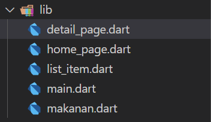
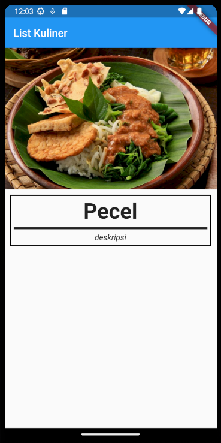
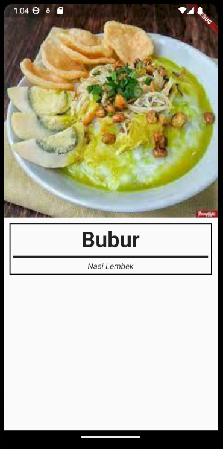

13 Studi Kasus 3 : Detail Kuliner
Pada studi kasus ini disarankan sudah membaca Bab 1 hingga 4
Pada studi kasus kali ini kita akan melanjutkan studi kasus 2. Jadi silahkan ikuti dulu studi kasus 2 lalu lanjut ke studi kasus ini. Hasil dari studi ini adalah aplikasi dengan dua halaman, yaitu halaman list makanan dan halaman detail makanan.
Untuk membuat aplikasi nya dapat berpindah ke halaman selanjutnya pertama-tama kita harus membuat container / setiap item dalam list di berinteraksi dengan disentuh. Hal ini bisa dilakukan dengan cara membungkus Container dengan InkWell atau GestureDetector. Pada studi kasus ini kita akan menggunakan InkWell. Silahkan buka file list_item.dart dan tambahkan kode berikut.
@override
Widget build(BuildContext context) {
return InkWell(
onTap: () {},
child: Container(
// ....
),
);
}Setelah dibungkus dengan InkWell item dalam list dapat di berinteraksi dengan sentuhan. Selanjutnya adalah menyiapkan halaman baru yang akan dibuka ketika item dalam list di sentuh. Buat file baru dengan nama detail_page.dart dan buat stateless widget didalamnya.

class DetailPage extends StatelessWidget {
const DetailPage({super.key});
@override
Widget build(BuildContext context) {
return const Placeholder();
}
}Selanjutnya silahkan desain halaman baru sesuai dengan preferensi. Berikut adalah contoh desain untuk halaman detail.
Widget build(BuildContext context) {
return Scaffold(
body: Column(
crossAxisAlignment: CrossAxisAlignment.start,
children: [
Image.asset(
'assets/pecel.jpg',
scale: 0.5,
),
Container(
margin: EdgeInsets.all(10),
padding: EdgeInsets.all(5),
width: double.infinity,
decoration: BoxDecoration(
border: Border.all(
width: 2,
),
),
child: Column(
children: [
Text(
"Pecel",
style: TextStyle(
fontSize: 40,
fontWeight: FontWeight.bold,
),
),
Divider(
thickness: 4,
color: Colors.black87,
),
Text(
"deskripsi",
style: TextStyle(
fontSize: 15,
fontStyle: FontStyle.italic,
),
),
],
),
)
],
),
);
}
Setelah desainnya jadi halaman detail masih belum bisa diakses. Untuk bisa diakses buka file list_item.dart dan tambahkan Navigator pada onTap.
InkWell(
onTap: () {
Navigator.push(
context, MaterialPageRoute(builder: (context) => DetailPage()));
},
),Sekarang setiap item dalam list dapat membuka halaman detail, namun data yang ditampilkan dalam halaman detail masih statis. Maka dari itu kita perlu menambahkan beberapa kode pada DetailPage agar data yang ditampikan menjadi dinamis. Buka kembali detail_page.dart dan tambahkan kode berikut.
class DetailPage extends StatelessWidget {
final String nama;
final String gambar;
final String deskripsi;
const DetailPage(
{super.key,
required this.nama,
required this.gambar,
required this.deskripsi});
@override
Widget build(BuildContext context) {
return Scaffold(
body: Column(
// ...
children: [
Image.asset(
gambar,
// ...
),
Container(
// ...
child: Column(
children: [
Text(
nama,
// ...
),
// ...
Text(
deskripsi,
// ...
),
],
),
)
],
),
);
}
}Lalu kembali pada file list_item.dart dan sesuaikan sesuaikan Navigator pada onTap
InkWell(
onTap: () {
Navigator.push(
context,
MaterialPageRoute(
builder: (context) => DetailPage(
nama: nama,
gambar: gambar,
deskripsi: deskripsi,
),
),
);
},
),Setelah melalui beberapa tahapan maka studi kasus ini pun selesai. Berikut gambaran akhir halaman detail.
